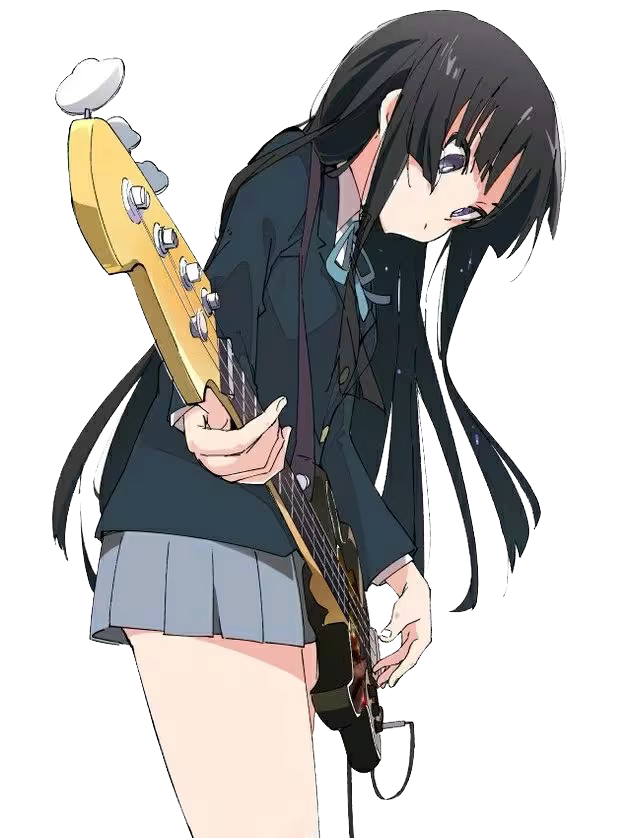
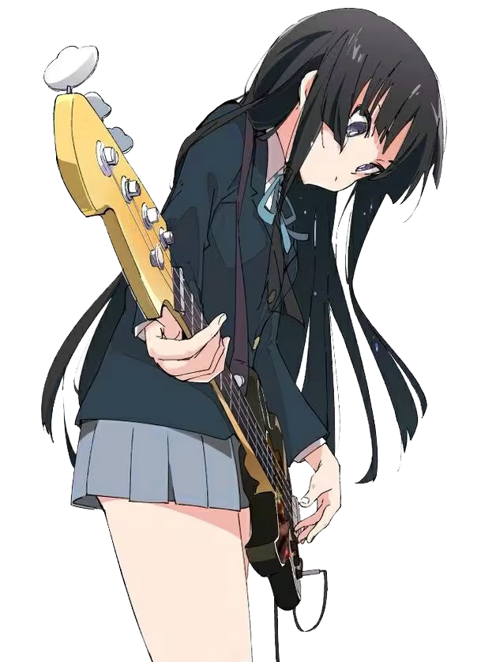

放学后TEA TIME（日语：放課後ティータイム）是动画《轻音少女》及其衍生作品中登场的一个女子乐队，简称"HTT"。由樱丘高中轻音部所组成，唯用了温泉和茶杯的下半部分作为记号。当时轻音部的成员有平泽唯、秋山澪、田井中律、琴吹䌷，以及第二年入社的中野梓，顾问是山中佐和子。在第二年的学园祭演出前正式决定乐团名称（实为大家在讨论时被佐和子擅自命名）。䌷负责替乐团作曲，澪则负责写作歌词，不过有少数的歌词是由唯创作出来的。

 


秋山 澪
(あきやま みお，Akiyama Mio）
轻音部的电贝斯手及合唱（有时也
会担任主唱）
因为性格腼腆而选择了贝斯手，理
由是吉他手通常站在乐队的前面，
太引人注目，使得自己会不好意思。
负责轻音部歌曲的歌词，会写出很
肉麻、可爱、甜蜜的歌词。
琴吹 䌷
ことぶき つむぎ,Kotobuki Tsumugi
在轻音部担任键盘手，轻音部茶点
的提供者。
虽然是有钱人家的大小姐但是在家
里以外完全没有大小姐的气派，不
过因此会对一些奇怪的东西感兴趣。
待人亲切温和，性格上还有些小孩
子气，经常被部员们的话题吸引而
参与其中。从四岁起开始练钢琴，
获奖无数。轻音部的曲子几乎都是
她创作出来的。
平泽 唯
(ひらさわ ゆい，Hirasawa Yui)
轻音部的吉他手，同时兼任主唱。
天然呆指数爆灯。在学会弹吉他后
被发现有“绝对音感”的特殊能力，
不用辅助工具就能听出1/8半音的
细微走音，令梓喵惊讶不已。加入
轻音部后从头开始学习吉他。平日
生活闲散，又很爱吃甜食，却无论
如何也不会变胖。喜欢可爱的东西
（会买现在用的这把吉他也是因为
它看起来非常可爱）。给自己的吉
他起名为吉太。
中野 梓
(なかの あずさ，Nakano Azusa)
故事开始后的第二年轻音部新加入
的吉他手
受在爵士乐团工作的父母影响，
小学四年级就开始练吉他，因而对
吉他十分精通，水平远在平泽唯之
上。本人非常尊敬秋山澪。且很适
合戴猫耳。 自己的电吉他在第二季
06话中改名为穆炭。
田井中 律
（たいなか りつ,Tainaka Ritsu）
樱丘高中轻音部的部长兼鼓手，作
品中第一个决定加入轻音部。
在轻音部担任鼓手以及部长，是首
个决定加入轻音部的角色。有男孩
子气息的元气娘，性格粗枝大叶，
经常忘交轻音部活动申请表，女工
什么的完全不会，但意外地对缝扣
子非常在行。因为觉得“吉他或键
盘等要手指不停的按来按去而感到
（难以应付，而打鼓则不需要而且
很帅”而选择当鼓手，但是曾对于
演出时鼓手在后排无法成为焦点懊
恼过。